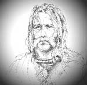

Gaul kendi içinde üç parçaya ayrılmıştı. Vercingetorix (MÖ 82-46) adındaki bir kabile şefi ülkenin dağınık kabilelerini Romalılar’a karşı direnmek için birleştirdi. Ne var ki bütün çabalarına karşılık ülkesi yenilgiye uğramış ve bugün Fransa’nın bulunduğu bölge, büyüyen Roma İmparatorluğu’na dahil olmuştur.

Yüz binlerce Galli savaşçının dahil olduğu söylenen Vercingetorix’in asi ordusu, yabancı işgaline karşı kahramanca direnişin parlak bir örneği olarak Fransa folk kültürünün bir parçası olmuştur. 19. yy ve 20. yy’ın başlarında Fransız milliyetçileri antik savaşçıyı Gallik ruhunun kurucuları arasında saymışlardır.
Roma’nın Gaul istilası MÖ 58 yılında başlamıştır. Parlak bir Romalı general olan Julius Sezar (MÖ 100-44) bölgeyi işgal etmiştir. Anılarından oluşan Gallik Savaşı adlı kitapta da belirttildiği gibi savaşın büyük bölümü ilk iki yılda tamamlanmış, aralıklı çatışmalar ise sonraki on yıl boyunca devam etmiştir.
Vercingetorix, Arvernian Celtillus’un oğluydu. Babası ülkenin tamamını ele geçirmeye çalıştığı iddiası ile rakipleri tarafından öldürülmüştü. MÖ 53 yılında Sezar İtalya’nın oldukça uzak bir bölgesindeyken, Vercingetorix bunu Roma karşıtı bir koalisyon kurmak için fırsat bildi. Bunun üzerine Sezar kış olmasına rağmen Gaul’e geri dönmek zorunda kalmış, ordularını kar kütlelerinin içinden isyancıların peşine yollamıştı.
Gallilerin Gergovia Savaşı’ndaki büyük zaferinin ardından, Vercingetorix Alesia’da sıkıştırıldı (MÖ 52). Burası Fransa’nın doğusundaki bir kaleydi. Sezar mancınık ve gizli tuzaklarla bölgeyi kuşattı. Bölgenin sakinlerinden binlercesi kuşatma sırasında açlıktan öldü. Vercingetorix vazgeçmek zorunda kaldı ve sonunda Sezar’a teslim oldu.
Söylendiğine göre teatral bir hava içinde gururla Sezar’ın yanına yaklaşıp kalkanını ayaklarının dibine fırlatmıştı. Zincirlenmiş olarak Roma’ya götürüldü. Sezar’ın zafer gösterisinde yürümek zorunda bırakıldı. Sonra da büyük ihtimalle cezaevinde idam edildi.
Ek Bilgiler
1- Vercingetorix 2003 yılındaki TNT filmi Sezar’da Alman aktör Heino Ferch (1963-) tarafından canlandırılmıştır. 2001 yapımı bir Fransız filmi olan Vercingetorix’de ise Mortal Kombat’le (1995) ünlenen Christopher Lambert (1957-) başroldeydi.
2- Yenilgisinin ardından Vercingetorix Roma’daki Mamertine Zindanı’na atıldı. Aziz Peter’in de daha sonra aynı yerde tutulduğu düşünülmektedir. Zindan günümüzde Katolik Kilisesi’ne ait tarihi bir bölgedir. “Aziz Peter Zindanı” adıyla anılmaktadır.
3- Alesia Savaşı’nın tam yeri bilinmemekle birlikte Doğu Fransa’daki Dijon’a yakın olduğu tahmin edilmektedir.